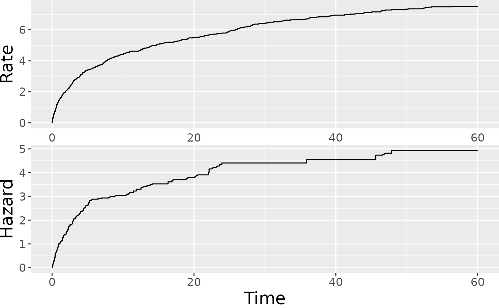
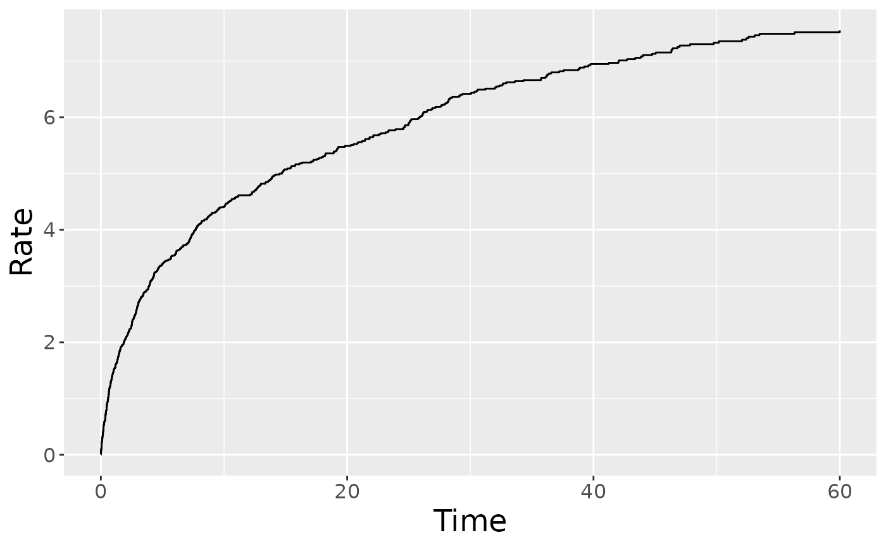
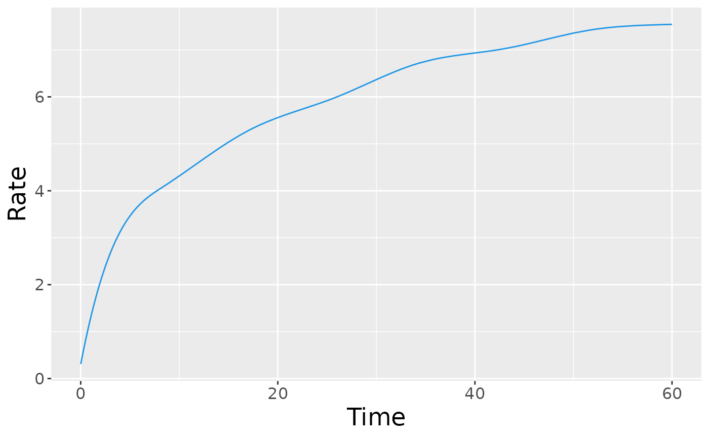

R/plot.R
plotRate.RdPlot the baseline cumulative rate function for an reReg object.
plotRate( x, newdata = NULL, frailty = NULL, showName = FALSE, type = c("unrestricted", "bounded", "scaled"), smooth = FALSE, control = list(), ... )
| x | an object of class |
|---|---|
| newdata | an optional data frame contains variables to include in the calculation of the cumulative rate function. If omitted, the baseline rate function will be plotted. |
| frailty | an optional vector to specify the shared frailty for |
| showName | an optional logical value indicating whether to label the curves
when |
| type | a character string specifying the type of rate function to be plotted. Options are "unrestricted", "scaled", "bounded". See Details. |
| smooth | an optional logical value indicating whether to add a smooth curve
obtained from a monotone increasing P-splines implemented in package |
| control | a list of control parameters. |
| ... | graphical parameters to be passed to methods.
These include |
A ggplot object.
The plotRate() plots the estimated baseline cumulative rate function
depending on the identifiability assumption.
When type = "unrestricted" (default), the baseline cumulative rate function
is plotted under the assumption \(E(Z) = 1\).
When type = "scaled", the baseline cumulative rate function is plotted
under the assumption \(\Lambda(\min(Y^\ast, \tau)) = 1\).
When type = "bounded", the baseline cumulative rate function is plotted
under the assumption \(\Lambda(\tau) = 1\).
See ?reReg for the specification of the notations and underlying models.
The argument control consists of options with argument defaults
to a list with the following values:
customizable x-label, default value is "Time".
customizable y-label, default value is empty.
customizable title, default value is "Baseline cumulative rate function".
These arguments can also be specified outside of the control list.
data(simDat) fm <- Recur(t.start %to% t.stop, id, event, status) ~ x1 + x2 fit <- reReg(fm, data = simDat, model = "cox|cox", B = 0) ## Plot both the baseline cumulative rate and hazard function plot(fit)## Plot baseline cumulative rate function plotRate(fit)plotRate(fit, smooth = TRUE)